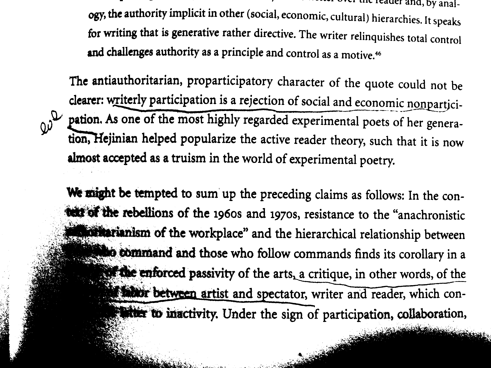

Books I've Underlined
Storming Heaven: Class Composition and Struggle in Italian Autoniomist Marxism by Steve Wright
Read in Dec 2017
The Work of Art in the Age of industrialization by Jasper Bernes
Read in Sep-Oct 2017
From Counterculture to Cyberculture by Fred Turner
Read in Mar-Apr 2017
Back